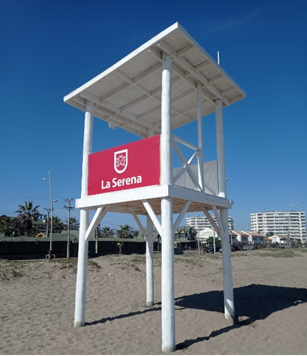
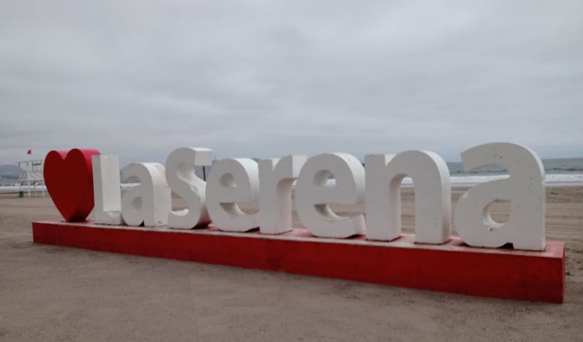

La obra correspondió a la conservación
de una intervención de construcción de techumbre y reparación de grietas estructurales del Liceo Gabriela Mistral, La Serena.
La obra contempla la instalación de 2 Atalayas de utilidad de los vigilantes en temporada estival, ubicada en el sector Avenida del Mar, en 4 esquinas y el Faro, La Serena.
La obra considera un espacio multiuso, sala de bodega, servicios higiénicos, oficina, sala de reuniones.
La obra contempla la instalación de 3 juegos de letras de bienvenida “La Serena”, Las cuales se emplazarán en sectores estratégicos de la ciudad, junto con la reposición de las letras existentes en la av. del mar.
La obra contempla la instalación de pasto sintético para cancha de fútbol profesional, reposición malla olímpica, graderías y obras complementarias como muros, pavimentos, rampas e instalación del equipamiento y equipos en las dependencias deportivas.
La obra contempla la instalación de equipos eléctricos (DS43), conservación de cabezal metálico, ejecución de bases y fundaciones nuevas, restauración e instalación de postes.
La obra contempla la habilitación de servicios higiénicos con duchas, incluye la conexión a la red de alcantarillado y agua potable.
La obra corresponde a la construcción de Skatepark, el cual contempla pavimento de hormigón, perfiles y barandas metálicas.
La obra contempló la construcción de las oficinas de jubilados y montepiados de Banco Estado de chile.
La obra consistió en diferentes trabajos de pintura, grietas, techumbre entre otras cosas de la fachada del gimnasio Liceo Diego Portales de Coquimbo.
La obra consistió en la instalación de plataformas y diferentes indumentarias para personas discapacitadas y con movilidad reducida en el sector de Av. Costanera de Coquimbo. Proyecto financiado con recursos de la Subsecretaría de Desarrollo Regional y Administrativo, PMU Subprograma Emergencia.
La obra consiste en la reposición del Ex consultorio como un centro comunitario, el cual satisfacerá las demandas de las organizaciones del sector.